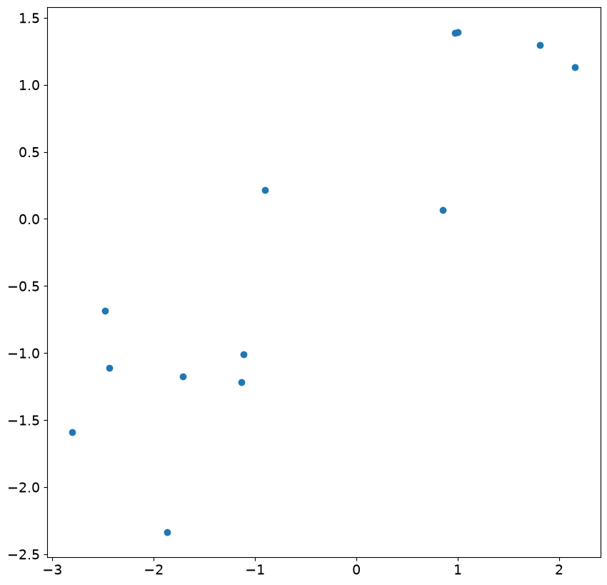
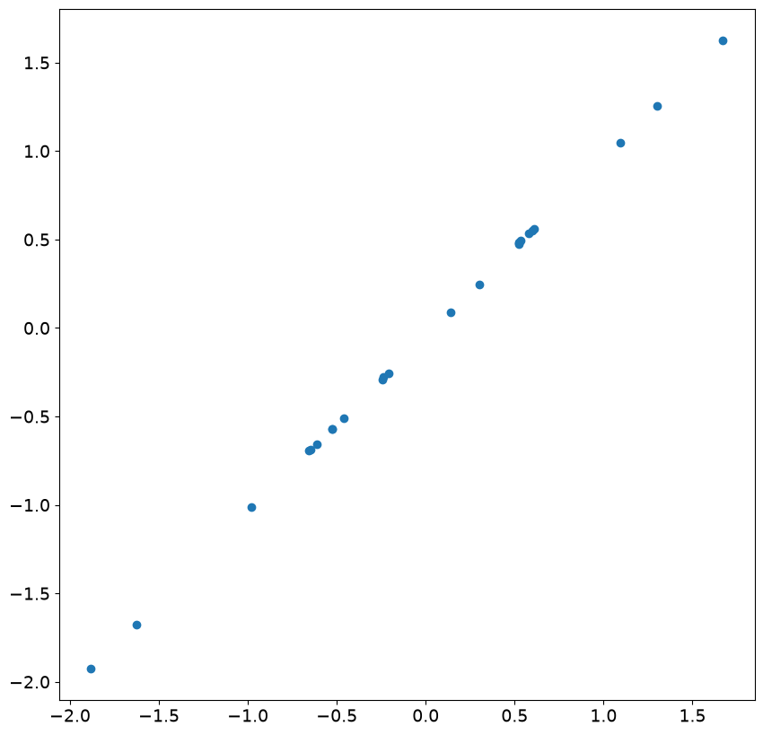

SARIMAX and ARIMA: Frequently Asked Questions (FAQ)#
This notebook contains explanations for frequently asked questions.
Comparing trends and exogenous variables in
SARIMAX,ARIMAandAutoRegReconstructing residuals, fitted values and forecasts in
SARIMAXandARIMAInitial residuals in
SARIMAXandARIMA
Comparing trends and exogenous variables in SARIMAX, ARIMA and AutoReg#
ARIMA are formally OLS with ARMA errors. A basic AR(1) in the OLS with ARMA errors is described as
In large samples, \(\hat{\delta}\stackrel{p}{\rightarrow} E[Y]\).
SARIMAX uses a different representation, so that the model when estimated using SARIMAX is
This is the same representation that is used when the model is estimated using OLS (AutoReg). In large samples, \(\hat{\phi}\stackrel{p}{\rightarrow} E[Y](1-\rho)\).
In the next cell, we simulate a large sample and verify that these relationship hold in practice.
[1]:
%matplotlib inline
[2]:
import numpy as np
import pandas as pd
rng = np.random.default_rng(20210819)
eta = rng.standard_normal(5200)
rho = 0.8
beta = 10
epsilon = eta.copy()
for i in range(1, eta.shape[0]):
epsilon[i] = rho * epsilon[i - 1] + eta[i]
y = beta + epsilon
y = y[200:]
[3]:
from statsmodels.tsa.api import SARIMAX, AutoReg
from statsmodels.tsa.arima.model import ARIMA
The three models are specified and estimated in the next cell. An AR(0) is included as a reference. The AR(0) is identical using all three estimators.
[4]:
ar0_res = SARIMAX(y, order=(0, 0, 0), trend="c").fit()
sarimax_res = SARIMAX(y, order=(1, 0, 0), trend="c").fit()
arima_res = ARIMA(y, order=(1, 0, 0), trend="c").fit()
autoreg_res = AutoReg(y, 1, trend="c").fit()
The table below contains the estimated parameter in the model, the estimated AR(1) coefficient, and the long-run mean which is either equal to the estimated parameters (AR(0) or ARIMA), or depends on the ratio of the intercept to 1 minus the AR(1) parameter.
[5]:
intercept = [
ar0_res.params[0],
sarimax_res.params[0],
arima_res.params[0],
autoreg_res.params[0],
]
rho_hat = [0] + [r.params[1] for r in (sarimax_res, arima_res, autoreg_res)]
long_run = [
ar0_res.params[0],
sarimax_res.params[0] / (1 - sarimax_res.params[1]),
arima_res.params[0],
autoreg_res.params[0] / (1 - autoreg_res.params[1]),
]
cols = ["AR(0)", "SARIMAX", "ARIMA", "AutoReg"]
pd.DataFrame(
[intercept, rho_hat, long_run],
columns=cols,
index=["delta-or-phi", "rho", "long-run mean"],
)
[5]:
| AR(0) | SARIMAX | ARIMA | AutoReg | |
|---|---|---|---|---|
| delta-or-phi | 9.7745 | 1.985714 | 9.774498 | 1.985790 |
| rho | 0.0000 | 0.796846 | 0.796875 | 0.796882 |
| long-run mean | 9.7745 | 9.774424 | 9.774498 | 9.776537 |
Differences between trend and exog in SARIMAX#
When SARIMAX includes exog variables, then the exog are treated as OLS regressors, so that the model estimated is
In the next example, we omit the trend and instead include a column of 1, which produces a model that is equivalent, in large samples, to the case with no exogenous regressor and trend="c". Here the estimated value of const matches the value estimated using ARIMA. This happens since both exog in SARIMAX and the trend in ARIMA are treated as linear regression models with ARMA errors.
[6]:
sarimax_exog_res = SARIMAX(y, exog=np.ones_like(y), order=(1, 0, 0), trend="n").fit()
print(sarimax_exog_res.summary())
SARIMAX Results
==============================================================================
Dep. Variable: y No. Observations: 5000
Model: SARIMAX(1, 0, 0) Log Likelihood -7068.656
Date: Sat, 27 Jun 2026 AIC 14143.311
Time: 20:32:05 BIC 14162.863
Sample: 0 HQIC 14150.164
- 5000
Covariance Type: opg
==============================================================================
coef std err z P>|z| [0.025 0.975]
------------------------------------------------------------------------------
const 9.7745 0.069 141.177 0.000 9.639 9.910
ar.L1 0.7969 0.009 93.691 0.000 0.780 0.814
sigma2 0.9894 0.020 49.921 0.000 0.951 1.028
===================================================================================
Ljung-Box (L1) (Q): 0.42 Jarque-Bera (JB): 0.08
Prob(Q): 0.51 Prob(JB): 0.96
Heteroskedasticity (H): 0.97 Skew: -0.01
Prob(H) (two-sided): 0.47 Kurtosis: 2.99
===================================================================================
Warnings:
[1] Covariance matrix calculated using the outer product of gradients (complex-step).
Using exog in SARIMAX and ARIMA#
While exog are treated the same in both models, the intercept continues to differ. Below we add an exogenous regressor to y and then fit the model using all three methods. The data generating process is now
[7]:
full_x = rng.standard_normal(eta.shape)
x = full_x[200:]
y += 3 * x
[8]:
sarimax_exog_res = SARIMAX(y, exog=x, order=(1, 0, 0), trend="c").fit()
arima_exog_res = ARIMA(y, exog=x, order=(1, 0, 0), trend="c").fit()
Examining the parameter tables, we see that the parameter estimates on x1 are identical while the estimates of the intercept continue to differ due to the differences in the treatment of trends in these estimators.
SARIMAX#
[9]:
def print_params(s):
from io import StringIO
return pd.read_csv(StringIO(s.tables[1].as_csv()), index_col=0)
print_params(sarimax_exog_res.summary())
[9]:
| coef | std err | z | P>|z| | [0.025 | 0.975] | |
|---|---|---|---|---|---|---|
| intercept | 1.9849 | 0.085 | 23.484 | 0.0 | 1.819 | 2.151 |
| x1 | 3.0231 | 0.011 | 277.150 | 0.0 | 3.002 | 3.044 |
| ar.L1 | 0.7969 | 0.009 | 93.735 | 0.0 | 0.780 | 0.814 |
| sigma2 | 0.9886 | 0.020 | 49.941 | 0.0 | 0.950 | 1.027 |
ARIMA#
[10]:
print_params(arima_exog_res.summary())
[10]:
| coef | std err | z | P>|z| | [0.025 | 0.975] | |
|---|---|---|---|---|---|---|
| const | 9.7741 | 0.069 | 141.201 | 0.0 | 9.638 | 9.910 |
| x1 | 3.0231 | 0.011 | 277.140 | 0.0 | 3.002 | 3.044 |
| ar.L1 | 0.7969 | 0.009 | 93.728 | 0.0 | 0.780 | 0.814 |
| sigma2 | 0.9886 | 0.020 | 49.941 | 0.0 | 0.950 | 1.027 |
exog in AutoReg#
When using AutoReg to estimate a model using OLS, the model differs from both SARIMAX and ARIMA. The AutoReg specification with exogenous variables is
This specification is not equivalent to the specification estimated in SARIMAX and ARIMA. Here the difference is non-trivial, and naive estimation on the same time series results in different parameter values, even in large samples (and the limit). Estimating this model changes the parameter estimates on the AR(1) coefficient.
AutoReg#
[11]:
autoreg_exog_res = AutoReg(y, 1, exog=x, trend="c").fit()
print_params(autoreg_exog_res.summary())
[11]:
| coef | std err | z | P>|z| | [0.025 | 0.975] | |
|---|---|---|---|---|---|---|
| const | 7.9714 | 0.064 | 124.525 | 0.0 | 7.846 | 8.097 |
| y.L1 | 0.1838 | 0.006 | 29.890 | 0.0 | 0.172 | 0.196 |
| x1 | 3.0311 | 0.021 | 142.513 | 0.0 | 2.989 | 3.073 |
The key difference can be seen by writing the model in lag operator notation.
where it is is assumed that \(|\phi|<1\). Here we see that \(Y_t\) depends on all lagged values of \(X_t\) and \(\eta_t\). This differs from the specification estimated by SARIMAX and ARIMA, which can be seen to be
In this specification, \(Y_t\) only depends on \(X_t\) and no other lags.
Using the correct DGP with AutoReg#
Simulating the process that is estimated in AutoReg shows that the parameters are recovered from the true model.
[12]:
y = beta + eta
epsilon = eta.copy()
for i in range(1, eta.shape[0]):
y[i] = beta * (1 - rho) + rho * y[i - 1] + 3 * full_x[i] + eta[i]
y = y[200:]
AutoReg with correct DGP#
[13]:
autoreg_alt_exog_res = AutoReg(y, 1, exog=x, trend="c").fit()
print_params(autoreg_alt_exog_res.summary())
[13]:
| coef | std err | z | P>|z| | [0.025 | 0.975] | |
|---|---|---|---|---|---|---|
| const | 1.9870 | 0.030 | 66.526 | 0.0 | 1.928 | 2.046 |
| y.L1 | 0.7968 | 0.003 | 300.382 | 0.0 | 0.792 | 0.802 |
| x1 | 3.0263 | 0.014 | 217.034 | 0.0 | 2.999 | 3.054 |
Reconstructing residuals, fitted values and forecasts in SARIMAX and ARIMA#
In models that contain only autoregressive terms, trends and exogenous variables, fitted values and forecasts can be easily reconstructed once the maximum lag length in the model has been reached. In practice, this means after \((P+D)s+p+d\) periods. Earlier predictions and residuals are harder to reconstruct since the model builds the best prediction for \(Y_t|Y_{t-1},Y_{t-2},...\). When the number of lags of \(Y\) is less than the autoregressive order, then the expression for the
optimal prediction differs from the model. For example, when predicting the very first value, \(Y_1\), there is no information available from the history of \(Y\), and so the best prediction is the unconditional mean. In the case of an AR(1), the second prediction will follow the model, so that when using ARIMA, the prediction is
since ARIMA treats both exogenous and trend terms as regression with ARMA errors.
This can be seen in the next set of cells.
[14]:
arima_res = ARIMA(y, order=(1, 0, 0), trend="c").fit()
print_params(arima_res.summary())
[14]:
| coef | std err | z | P>|z| | [0.025 | 0.975] | |
|---|---|---|---|---|---|---|
| const | 9.9346 | 0.222 | 44.667 | 0.0 | 9.499 | 10.371 |
| ar.L1 | 0.7957 | 0.009 | 92.515 | 0.0 | 0.779 | 0.813 |
| sigma2 | 10.3015 | 0.204 | 50.496 | 0.0 | 9.902 | 10.701 |
[15]:
arima_res.predict(0, 2)
[15]:
array([ 9.93458658, 10.91088035, 11.80415747])
[16]:
delta_hat, rho_hat = arima_res.params[:2]
delta_hat + rho_hat * (y[0] - delta_hat)
[16]:
np.float64(10.910880346250012)
SARIMAX treats trend terms differently, and so the one-step forecast from a model estimated using SARIMAX is
[17]:
sarima_res = SARIMAX(y, order=(1, 0, 0), trend="c").fit()
print_params(sarima_res.summary())
[17]:
| coef | std err | z | P>|z| | [0.025 | 0.975] | |
|---|---|---|---|---|---|---|
| intercept | 2.0283 | 0.097 | 20.841 | 0.0 | 1.838 | 2.219 |
| ar.L1 | 0.7959 | 0.009 | 92.536 | 0.0 | 0.779 | 0.813 |
| sigma2 | 10.3007 | 0.204 | 50.500 | 0.0 | 9.901 | 10.700 |
[18]:
sarima_res.predict(0, 2)
[18]:
array([ 9.93588659, 10.91128867, 11.80469658])
[19]:
delta_hat, rho_hat = sarima_res.params[:2]
delta_hat + rho_hat * y[0]
[19]:
np.float64(10.911288670367867)
Prediction with MA components#
When a model contains a MA component, the prediction is more complicated since errors are never directly observable. The prediction is still \(Y_t|Y_{t-1},Y_{t-2},...\), and when the MA component is invertible, then the optimal prediction can be represented as a \(t\)-lag AR process. When \(t\) is large, this should be very close to the prediction as if the errors were observable. For short lags, this can differ markedly.
In the next cell we simulate an MA(1) process, and fit an MA model.
[20]:
rho = 0.8
beta = 10
epsilon = eta.copy()
for i in range(1, eta.shape[0]):
epsilon[i] = rho * eta[i - 1] + eta[i]
y = beta + epsilon
y = y[200:]
ma_res = ARIMA(y, order=(0, 0, 1), trend="c").fit()
print_params(ma_res.summary())
[20]:
| coef | std err | z | P>|z| | [0.025 | 0.975] | |
|---|---|---|---|---|---|---|
| const | 9.9185 | 0.025 | 391.129 | 0.0 | 9.869 | 9.968 |
| ma.L1 | 0.8025 | 0.009 | 93.864 | 0.0 | 0.786 | 0.819 |
| sigma2 | 0.9904 | 0.020 | 49.925 | 0.0 | 0.951 | 1.029 |
We start by looking at predictions near the beginning of the sample corresponding y[1], …, y[5].
[21]:
ma_res.predict(1, 5)
[21]:
array([ 8.57011015, 9.19907188, 8.96971353, 9.78987115, 11.11984478])
and the corresponding residuals that are needed to produce the “direct” forecasts
[22]:
ma_res.resid[:5]
[22]:
array([-2.7621904 , -1.12255005, -1.33557621, -0.17206944, 1.5634041 ])
Using the model parameters, we can produce the “direct” forecasts using the MA(1) specification
We see that these are not especially close to the actual model predictions for the initial forecasts, but that the gap quickly reduces.
[23]:
delta_hat, rho_hat = ma_res.params[:2]
direct = delta_hat + rho_hat * ma_res.resid[:5]
direct
[23]:
array([ 7.70168405, 9.01756049, 8.84659855, 9.7803589 , 11.17314527])
The difference is nearly a standard deviation for the first but declines as the index increases.
[24]:
ma_res.predict(1, 5) - direct
[24]:
array([ 0.8684261 , 0.18151139, 0.12311499, 0.00951225, -0.05330049])
We next look at the end of the sample and the final three predictions.
[25]:
t = y.shape[0]
ma_res.predict(t - 3, t - 1)
[25]:
array([ 9.79692804, 10.51272714, 10.55855562])
[26]:
ma_res.resid[-4:-1]
[26]:
array([-0.15142355, 0.74049384, 0.79759816])
[27]:
direct = delta_hat + rho_hat * ma_res.resid[-4:-1]
direct
[27]:
array([ 9.79692804, 10.51272714, 10.55855562])
The “direct” forecasts are identical. This happens since the effect of the short sample has disappeared by the end of the sample (In practice it is negligible by observations 100 or so, and numerically absent by around observation 160).
[28]:
ma_res.predict(t - 3, t - 1) - direct
[28]:
array([0., 0., 0.])
The same principle applies in more complicated model that include multiple lags or seasonal term - predictions in AR models are simple once the effective lag length has been reached, while predictions in models that contains MA components are only simple once the maximum root of the MA lag polynomial is sufficiently small so that the residuals are close to the true residuals.
Prediction differences in SARIMAX and ARIMA#
The formulas used to make predictions from SARIMAX and ARIMA models differ in one key aspect - ARIMA treats all trend terms, e.g, the intercept or time trend, as part of the exogenous regressors. For example, an AR(1) model with an intercept and linear time trend estimated using ARIMA has the specification
When the same model is estimated using SARIMAX, the specification is
The differences are more apparent when the model contains exogenous regressors, \(X_t\). The ARIMA specification is
while the SARIMAX specification is
The key difference between these two is that the intercept and the trend are effectively equivalent to exogenous regressions in ARIMA while they are more like standard ARMA terms in SARIMAX.
The next cell simulates an ARX with a time trend using the specification in ARIMA and estimates the parameters using both estimators.
[29]:
rho = 0.8
beta = 2
delta0 = 10
delta1 = 0.5
epsilon = eta.copy()
for i in range(1, eta.shape[0]):
epsilon[i] = rho * epsilon[i - 1] + eta[i]
t = np.arange(epsilon.shape[0])
y = delta0 + delta1 * t + beta * full_x + epsilon
y = y[200:]
[30]:
start = np.array([110, delta1, beta, rho, 1])
arx_res = ARIMA(y, exog=x, order=(1, 0, 0), trend="ct").fit()
mod = SARIMAX(y, exog=x, order=(1, 0, 0), trend="ct")
start[:2] *= 1 - rho
sarimax_res = mod.fit(start_params=start, method="bfgs")
/opt/hostedtoolcache/Python/3.14.6/x64/lib/python3.14/site-packages/scipy/optimize/_optimize.py:1330: OptimizeWarning: Desired error not necessarily achieved due to precision loss.
res = _minimize_bfgs(f, x0, args, fprime, callback=callback, **opts)
/opt/hostedtoolcache/Python/3.14.6/x64/lib/python3.14/site-packages/statsmodels/tsa/statespace/mlemodel.py:740: ConvergenceWarning: Maximum Likelihood optimization failed to converge. Check mle_retvals
mlefit = super().fit(
Current function value: 1.413691
Iterations: 43
Function evaluations: 72
Gradient evaluations: 62
The two estimators fit similarly, although there is a small difference in the log-likelihood. This is a numerical issue and should not materially affect the predictions. Importantly the two trend parameters, const and x1 (unfortunately named for the time trend), differ between the two. The other parameters are effectively identical.
[31]:
print(arx_res.summary())
SARIMAX Results
==============================================================================
Dep. Variable: y No. Observations: 5000
Model: ARIMA(1, 0, 0) Log Likelihood -7069.171
Date: Sat, 27 Jun 2026 AIC 14148.343
Time: 20:32:33 BIC 14180.928
Sample: 0 HQIC 14159.763
- 5000
Covariance Type: opg
==============================================================================
coef std err z P>|z| [0.025 0.975]
------------------------------------------------------------------------------
const 109.2112 0.137 796.186 0.000 108.942 109.480
x1 0.5000 4.78e-05 1.05e+04 0.000 0.500 0.500
x2 2.0495 0.011 187.517 0.000 2.028 2.071
ar.L1 0.7965 0.009 93.669 0.000 0.780 0.813
sigma2 0.9897 0.020 49.854 0.000 0.951 1.029
===================================================================================
Ljung-Box (L1) (Q): 0.33 Jarque-Bera (JB): 0.15
Prob(Q): 0.57 Prob(JB): 0.93
Heteroskedasticity (H): 0.97 Skew: -0.01
Prob(H) (two-sided): 0.53 Kurtosis: 3.00
===================================================================================
Warnings:
[1] Covariance matrix calculated using the outer product of gradients (complex-step).
[32]:
print(sarimax_res.summary())
SARIMAX Results
==============================================================================
Dep. Variable: y No. Observations: 5000
Model: SARIMAX(1, 0, 0) Log Likelihood -7068.457
Date: Sat, 27 Jun 2026 AIC 14146.914
Time: 20:32:33 BIC 14179.500
Sample: 0 HQIC 14158.335
- 5000
Covariance Type: opg
==============================================================================
coef std err z P>|z| [0.025 0.975]
------------------------------------------------------------------------------
intercept 22.7438 0.929 24.481 0.000 20.923 24.565
drift 0.1019 0.004 23.985 0.000 0.094 0.110
x1 2.0230 0.011 185.290 0.000 2.002 2.044
ar.L1 0.7963 0.008 93.745 0.000 0.780 0.813
sigma2 0.9894 0.020 49.899 0.000 0.951 1.028
===================================================================================
Ljung-Box (L1) (Q): 0.47 Jarque-Bera (JB): 0.13
Prob(Q): 0.49 Prob(JB): 0.94
Heteroskedasticity (H): 0.97 Skew: -0.01
Prob(H) (two-sided): 0.47 Kurtosis: 3.00
===================================================================================
Warnings:
[1] Covariance matrix calculated using the outer product of gradients (complex-step).
Initial residuals SARIMAX and ARIMA#
Residuals for observations before the maximal model order, which depends on the AR, MA, Seasonal AR, Seasonal MA and differencing parameters, are not reliable and should not be used for performance assessment. In general, in an ARIMA with orders \((p,d,q)\times(P,D,Q,s)\), the formula for residuals that are less well behaved is:
We can simulate some data from an ARIMA(1,0,0)(1,0,0,12) and examine the residuals.
[33]:
import numpy as np
import pandas as pd
rho = 0.8
psi = -0.6
beta = 20
epsilon = eta.copy()
for i in range(13, eta.shape[0]):
epsilon[i] = (
rho * epsilon[i - 1]
+ psi * epsilon[i - 12]
- (rho * psi) * epsilon[i - 13]
+ eta[i]
)
y = beta + epsilon
y = y[200:]
With a large sample, the parameter estimates are very close to the DGP parameters.
[34]:
res = ARIMA(y, order=(1, 0, 0), trend="c", seasonal_order=(1, 0, 0, 12)).fit()
print(res.summary())
SARIMAX Results
========================================================================================
Dep. Variable: y No. Observations: 5000
Model: ARIMA(1, 0, 0)x(1, 0, 0, 12) Log Likelihood -7076.266
Date: Sat, 27 Jun 2026 AIC 14160.532
Time: 20:32:42 BIC 14186.600
Sample: 0 HQIC 14169.668
- 5000
Covariance Type: opg
==============================================================================
coef std err z P>|z| [0.025 0.975]
------------------------------------------------------------------------------
const 19.8586 0.043 458.609 0.000 19.774 19.943
ar.L1 0.7972 0.008 93.925 0.000 0.781 0.814
ar.S.L12 -0.6044 0.011 -53.280 0.000 -0.627 -0.582
sigma2 0.9914 0.020 49.899 0.000 0.952 1.030
===================================================================================
Ljung-Box (L1) (Q): 0.50 Jarque-Bera (JB): 0.11
Prob(Q): 0.48 Prob(JB): 0.95
Heteroskedasticity (H): 0.96 Skew: -0.01
Prob(H) (two-sided): 0.40 Kurtosis: 2.99
===================================================================================
Warnings:
[1] Covariance matrix calculated using the outer product of gradients (complex-step).
We can first examine the initial 13 residuals by plotting against the actual shocks in the model. While there is a correspondence, it is fairly weak and the correlation is much less than 1.
[35]:
import matplotlib.pyplot as plt
plt.rc("figure", figsize=(10, 10))
plt.rc("font", size=14)
_ = plt.scatter(res.resid[:13], eta[200 : 200 + 13])

Looking at the next 24 residuals and shocks, we see there is nearly perfect correlation. This is expected in large samples once the less accurate residuals are ignored.
[36]:
_ = plt.scatter(res.resid[13:37], eta[200 + 13 : 200 + 37])

Next, we simulate an ARIMA(1,1,0), and include a time trend.
[37]:
rng = np.random.default_rng(20210819)
eta = rng.standard_normal(5200)
rho = 0.8
beta = 20
epsilon = eta.copy()
for i in range(2, eta.shape[0]):
epsilon[i] = (1 + rho) * epsilon[i - 1] - rho * epsilon[i - 2] + eta[i]
t = np.arange(epsilon.shape[0])
y = beta + 2 * t + epsilon
y = y[200:]
Again the parameter estimates are very close to the DGP parameters.
[38]:
res = ARIMA(y, order=(1, 1, 0), trend="t").fit()
print(res.summary())
SARIMAX Results
==============================================================================
Dep. Variable: y No. Observations: 5000
Model: ARIMA(1, 1, 0) Log Likelihood -7067.739
Date: Sat, 27 Jun 2026 AIC 14141.479
Time: 20:32:44 BIC 14161.030
Sample: 0 HQIC 14148.331
- 5000
Covariance Type: opg
==============================================================================
coef std err z P>|z| [0.025 0.975]
------------------------------------------------------------------------------
x1 1.7747 0.069 25.642 0.000 1.639 1.910
ar.L1 0.7968 0.009 93.658 0.000 0.780 0.813
sigma2 0.9896 0.020 49.908 0.000 0.951 1.028
===================================================================================
Ljung-Box (L1) (Q): 0.43 Jarque-Bera (JB): 0.09
Prob(Q): 0.51 Prob(JB): 0.96
Heteroskedasticity (H): 0.97 Skew: -0.01
Prob(H) (two-sided): 0.47 Kurtosis: 2.99
===================================================================================
Warnings:
[1] Covariance matrix calculated using the outer product of gradients (complex-step).
The residuals are not accurate, and the first residual is approximately 500. The others are closer, although in this model the first 2 should usually be ignored.
[39]:
res.resid[:5]
[39]:
array([ 5.08403002e+02, -1.58904197e+00, -1.54902446e+00, 1.04992617e-01,
1.33644383e+00])
The reason why the first residual is so large is that the optimal prediction of this value is the mean of the difference, which is 1.77. Once the first value is known, the second value makes use of the first value in its prediction and the prediction is substantially closer to the truth.
[40]:
res.predict(0, 5)
[40]:
array([ 1.77472562, 511.95355128, 510.87392196, 508.85708934,
509.03356182, 511.85245439])
It is worth noting that the results class contains two parameters than can be helpful in understanding which residuals are problematic, loglikelihood_burn and nobs_diffuse.
[41]:
res.loglikelihood_burn, res.nobs_diffuse
[41]:
(1, 0)